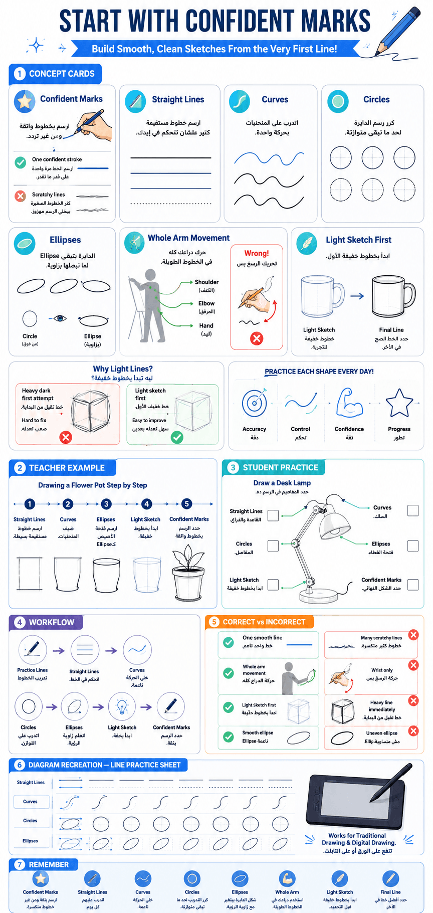
الرسامين شبه لعيبة الكورة بالظبط لازم قبل ما يبدأوا رسم لازم يسخنوا
ايديهم شوية ويحركوا صوابعهم كده ويبدأوا يرسموا حاجات خفيفة وخطوط
ومنحنيات واشكال لحد ما يحسوا انهم فايقين يرسموا رسمة كويسة
عنوان اول سلايد عندنا بيقول "ابدأ بخطوط واثقة".
لكن خدوا بالكم، كلمة "واثقة" هنا مش معناها إنك لازم تكون محترف أو إن كل خط ترسمه يبقى مظبوط.
المقصود إنك تحرك إيدك بحرية، ومتخليش الخوف يخليك ترسم خطوط قصيرة ومتكسرة.
كتير من المبتدئين يعملوا كده.
يرسم خط صغير...
وبعدين خط صغير جنبه...
وبعدين واحد كمان...
وفي الآخر يبقى عندهم خط مهزوز.
لكن الرسام المحترف غالبًا يرسم الخط مرة واحدة بحركة هادئة وطويلة.
حتى لو احتاج يعدله بعد كده، بيكون عنده أساس واضح يشتغل عليه.
يعني ببساطة...
الغلط العادي أحسن من التردد المستمر.
العربية: الخطوط المستقيمة، المنحنيات، الدوائر، والشكل البيضاوي.
السلايد بيقول إن الأربع أشكال دول هم أفضل Warm-up قبل أي رسمة.
زي لاعب الكورة قبل الماتش.
أو لاعب الجيم قبل التمرين.
مينفعش تبدأ ترسم رسمة كبيرة وإيدك لسه متعودتش على الحركة.
ابدأ الأول بخطوط مستقيمة.
بعدها منحنيات.
بعدها دوائر.
وبعدين Ellipses.
يمكن تسأل:
هو ليه Ellipses مهمة؟
لأن أي Cylinder يعني اي شكل اسطواني تقريبًا هنرسمه هيكون فيه Ellipse.
زي الكوباية.
أو الزجاجة.
أو العلبة.
فلازم نتدرب عليها كتير.
العربية: استخدم دراعك كله.
يعني لما تيجي ترسم خط طويل، متحركش الرسغ اللي هو مفصل كف الايد بس.
لكن حرك دراعك كله.
ليه؟
لأن الرسغ حركته صغيرة.
فلما نحاول نرسم خط طويل بالرسغ، الخط غالبًا هيطلع متعرج.
لكن لما نستخدم الكوع والكتف مع بعض، الحركة تبقى أنعم وأطول.
جرب بنفسك.
ارسم خط طويل وإنت بتحرك الرسغ بس.
وبعدين ارسم واحد وإنت بتحرك دراعك.
هتلاحظ فرق كبير جدًا.
العربية: ارسم محاولات خفيفة وسريعة وبسيطة كتير قبل ما تثبت على حاجة .
السلايد بيقول:
Draw many light attempts before choosing the best one.
يعني متضغطش على القلم من أول مرة.
ابدأ بخطوط خفيفة جدًا.
ليه؟
لأنك ممكن تغير رأيك.
أو تكتشف إن الخط محتاج يتحرك سنة.
لو الخط تقيل من البداية، هيكون صعب تعدله وتمسح وتغير.
لكن لو خفيف، تقدر تمسحه أو تتجاهله بسهولة.
بعد ما تختار أحسن خط، وقتها تقدر تعيده بخط أوضح.
وده أسلوب بيستخدمه أغلب الرسامين.
العربية: الدائرة بتتحول إلى Ellipse لما تتلف في الفراغ.
دي نقطة مهمة جدًا.
إحنا عارفين إن الدائرة شكلها دائري.
لكن لو بصينا عليها من زاوية، هل هتفضل دائرة؟
لا.
هتبان Ellipse.
وده بسبب Perspective.
مثلاً...
لو بصيت على فتحة الكوباية من فوق هتشوفها دائرة تقريبًا.
لكن أول ما تنزل بعينك شوية، هتشوفها بقت Ellipse.
يبقى وإحنا بنرسم أي جسم ثلاثي الأبعاد، لازم نفتكر إن الدواير مش دايمًا هتفضل دواير.
العربية: التدريب الحر.
آخر نقطة بتقول:
Clean forms start with loose practice, not perfection.
يعني الرسمة النظيفة مبتبدأش بالكمال.
بتبدأ بالتجريب.
متحاولش تخلي أول محاولة مثالية.
لأن ده هيخليك تتوتر.
ابدأ بخطوط بسيطة.
وجرب.
واغلط.
وعدل.
بعد شوية هتلاقي الخطوط نفسها بقت أحسن.
الرسم مهارة بتتحسن بالممارسة، مش بالحفظ.
تعالوا نبص على الصورة الموجودة يمين السلايد.
الصورة عبارة عن تدريبات مرتبة في صفوف.
أول صف فيه خطوط مستقيمة.
الفكرة إنك تعيد رسم الخط أكتر من مرة بنفس الطول والاتجاه، علشان تتحكم في حركة إيدك.
الصف اللي بعده فيه خطوط منحنية.
هنا بتتدرب إن المنحنى يبقى ناعم، من غير زوايا حادة أو اهتزاز.
بعد كده هنلاقي صف فيه دوائر.
لاحظوا إن كل دائرة تقريبًا مرسوم جواها علامة زائد خفيفة.
دي خطوط إرشادية بتساعدك تحافظ على شكل الدائرة متوازن.
بعدها فيه صف من الـ Ellipses.
ودي مرسومة بزوايا مختلفة، علشان تتعود إن الشكل البيضاوي بيتغير حسب زاوية الرؤية.
في أقصى يمين الصورة فيه جهاز Tablet وقلم Digital Pen.
وجوده هنا معناه إن نفس التمارين دي تنفع سواء بترسم على ورقة أو على جهاز رسم رقمي.
يعني المهارة واحدة، والأداة هي اللي بتختلف.
تخيل إنك بتتعلم تكتب اسمك بخط جديد.
أكيد أول مرة مش هيطلع جميل.
فتكتب الاسم مرة...
واتنين...
وعشرة...
لحد ما يبقى شكله ثابت.
الرسم نفس الفكرة.
قبل ما ترسم شخصية أو منظر طبيعي، اقضي خمس دقايق بس في رسم خطوط مستقيمة، منحنيات، دوائر، وEllipses، وهتلاحظ إن تحكمك في القلم اتحسن جدًا.
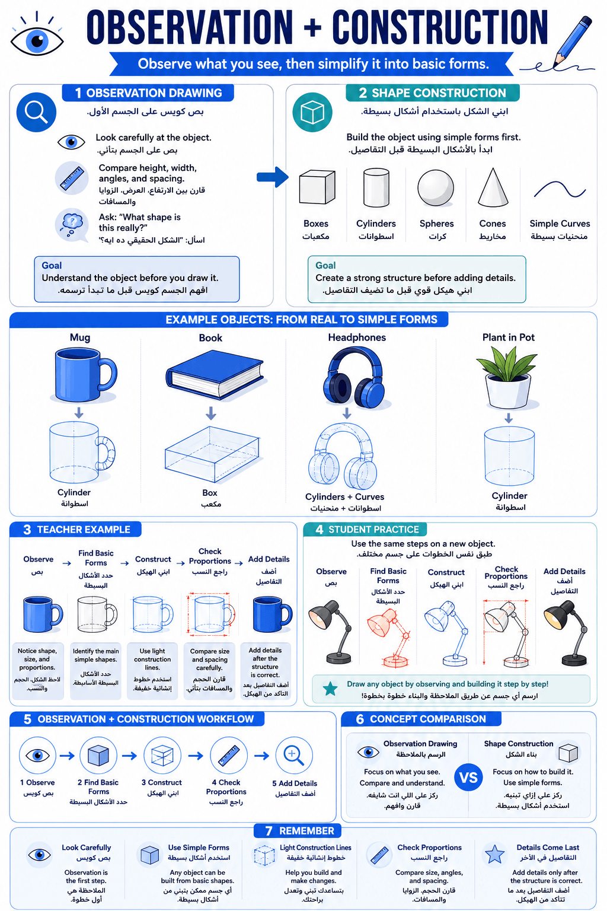
العربية: الرسم بالملاحظة.
أول جزء في السلايد اسمه Observation Drawing.
وده معناه إن أول حاجة نعملها هي إننا نبص كويس جدًا قبل ما نحرك القلم.
كتير من المبتدئين بيبدأوا يرسموا بسرعة، وبعد شوية يكتشفوا إن الشكل كله محتاج يتعاد.
لكن الرسام الشاطر بيقضي وقت في الملاحظة.
السلايد بيقول إننا نقارن:
Height.
Width.
Angles.
Spacing.
يعني نبص على الارتفاع.
والعرض.
وزوايا الجسم.
والمسافات بين أجزائه.
وبعدين نسأل نفسنا:
What shape is this really?
الشكل ده عبارة عن ايه في الحقيقة
وده سؤال مهم جدًا.
لأن المخ ساعات يقولك:
"دي كوباية."
لكن الفنان يقول:
"لا... دي Cylinder."
أو:
"الكتاب ده عبارة عن Box."
يعني بيحول الجسم الحقيقي لأشكال بسيطة يقدر يرسمها بسهولة.
العربية: بناء الشكل.
بعد ما خلصنا الملاحظة، نبدأ مرحلة Construction.
يعني نبني الجسم باستخدام أشكال هندسية بسيطة.
السلايد كاتب:
Boxes. مكعبات
Cylinders. اسطوانات
Spheres. كور
Cones. مخروط
Simple Curves. خطوط منحنية
وده معناه إن أي جسم حواليك تقريبًا ممكن يتكون من الأشكال دي.
الكوباية عبارة عن Cylinder.
الكتاب عبارة عن Box.
السماعة فيها Cylinders و Curves.
الأصيص عبارة عن Cylinder.
وده بيسهل علينا الرسم جدًا.
بدل ما نحاول نرسم الجسم مرة واحدة، نبنيه جزء جزء.
لو طلبت منك ترسم عربية، متبدأش بالرسم النهائي.
ابدأ الأول بصندوق كبير يمثل جسم العربية.
بعدها ارسم أربع دوائر للعجل.
وبعدين أضف الشبابيك والأبواب والفوانيس.
هتلاقي العربية طلعت مظبوطة وأسهل بكتير من إنك تحاول ترسمها بكل تفاصيلها من أول خط.
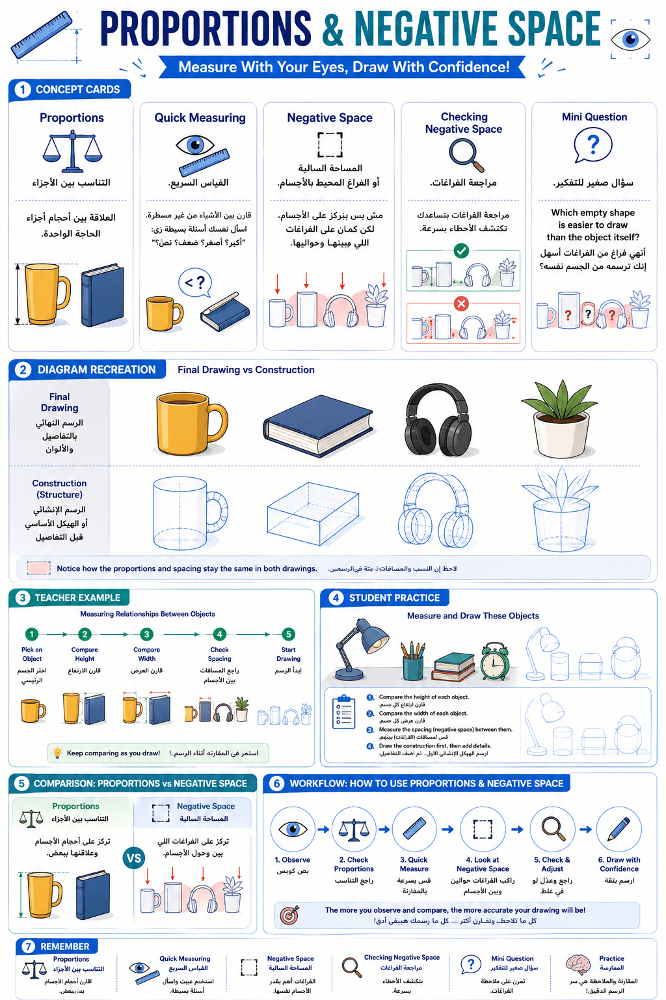
العربية: التناسب بين الأجزاء.
بصوا، كلمة Proportions معناها العلاقة بين أحجام أجزاء الحاجة الواحدة.
يعني لما تبص على كوب، مش المهم تعرف إنه كوب وبس، لكن كمان تشوف:
ارتفاعه قد إيه.
عرضه قد إيه.
حجم المقبض بالنسبة للكوب.
هل المقبض طويل ولا قصير؟
هل الكوب أطول من الكتاب اللي جنبه ولا أقصر؟
الفنان الشاطر مش بيقيس كل حاجة بمسطرة، لكنه بيقارن بين الأشياء بعينه.
يعني بدل ما يقول:
"الكوب طوله 12 سم."
هو بيفكر:
"الكوب تقريبًا أطول من الكتاب بشوية."
أو:
"عرض الكتاب حوالي ضعف عرض الكوب."
وده اللي بيخلي الرسم يطلع طبيعي.
لو التناسب غلط، حتى لو كل التفاصيل موجودة، الرسمة هتحس إنها غريبة.
مثلاً...
لو رسمت إنسان ورأسه أكبر من جسمه بكتير، هتحس إن فيه حاجة غلط.
ولو رسمت عربية والعجل أصغر من الطبيعي، برضه هيبان إن الرسمة مش واقعية.
يبقى التناسب أهم من التفاصيل الصغيرة.
العربية: القياس السريع.
السلايد بيقول بدل ما نقيس بالأرقام، نسأل نفسنا أسئلة بسيطة.
مثلاً:
هل الكتاب عرضه ضعف عرض الكوباية؟
هل السماعة ارتفاعها قريب من ارتفاع الكتاب؟
هل النبات أطول من الكوب؟
الأسئلة دي بتخلي مخنا يقارن باستمرار.
كل ما تقارن أكتر، كل ما الرسم يبقى أدق.
وفي الحقيقة، أغلب الرسامين بيستخدموا الطريقة دي طول الوقت.
ممكن حتى تلاقيهم يمدوا القلم قدامهم ويبصوا بيه علشان يقارنوا الأحجام، لكن في البداية إحنا هنكتفي بالمقارنة بالعين.
العربية: المساحة السالبة أو الفراغ المحيط بالأجسام.
دي من أكتر الأفكار اللي ممكن تكون جديدة عليكم.
لما نبص على أي مجموعة حاجات، إحنا غالبًا بنركز على الحاجة نفسها.
مثلاً:
الكوباية.
الكتاب.
السماعة.
النبات.
لكن الفنان ساعات بيعمل العكس.
بيبص على الفراغ اللي بينهم.
يعني المسافات الفاضية.
الشكل اللي بيتكون بين جسمين.
المكان اللي حوالي الجسم علشان يحدد مثلا حجم الجسم او لو فيه حاجة وراه يعمل حسابه عليها زي ضوء مثلا.
العربية: مراجعة الفراغات.
السلايد بيقول:
Checking negative space helps you spot mistakes faster.
يعني لما تراجع الفراغات، هتكتشف الأخطاء بسرعة.
مثلاً...
لو المسافة بين الكوب والكتاب أكبر من الحقيقة.
أو المسافة بين السماعة والنبات أصغر من الطبيعي.
عينك هتلاحظ إن شكل الفراغ مختلف.
وساعتها تعرف إن فيه جزء محتاج يتعدل.
أوقات كتير الرسام يفضل يعدل في شكل الكوب، بينما المشكلة أصلًا في المسافة بينه وبين الكتاب.
علشان كده لازم نبص على الصورة كلها، مش على كل جسم لوحده.
السلايد ده بيعتبر تطبيق مباشر لفكرة الأشكال الأساسية. بدل ما نحاول نرسم الحاجة بكل تفاصيلها من أول مرة، هنتعلم إزاي نبسطها لأشكال هندسية سهلة، وبعد كده نضيف التفاصيل تدريجيًا.
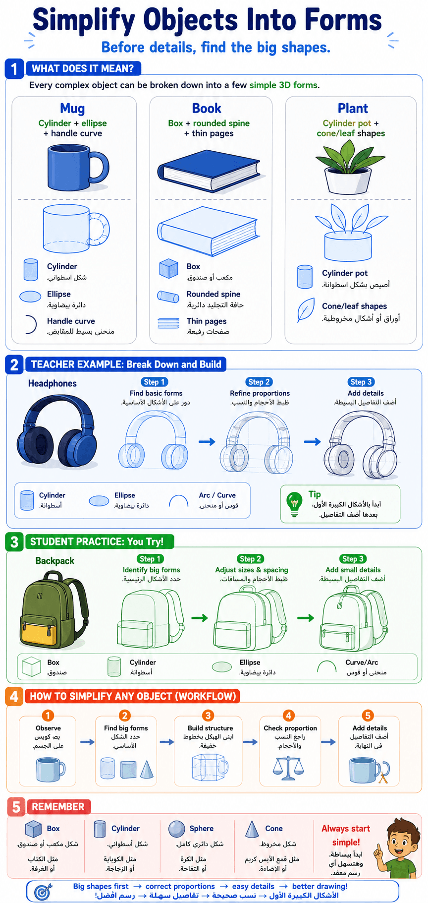
الكوباية
بصوا على أول صورة ناحية الشمال.
السلايد بيقول إن الـ Mug بيتكون من:
Cylinder اسطوانة
Ellipse شكل بيضاوي
Handle Curve منحنى
يعني جسم الكوباية عبارة عن أسطوانة.
والفتحة من فوق عبارة عن Ellipse لأنها مرسومة في منظور.
والمقبض مجرد منحنى بسيط.
لما نفكر فيها بالطريقة دي، رسمها يبقى أسهل بكتير.
العربية: الكتاب
بصوا على الصورة اللي بعدها.
السلايد بيقول انها مكونة من :
Box مكعبات او
Rounded Spine كعب الكتاب دائري
Thin Pages صفحات ورق
يعني ابدأ بمكعب أو صندوق.
بعدها أضف مكان التجليد.
ثم الصفحات.
بدل ما تبدأ ترسم الورق كله مرة واحدة.
العربية: النبتة
آخر صورة عندنا بيتكلم عن النبتة.
الأصيص عبارة عن Cylinder.
أما الأوراق، فيمكن تبسيطها لأشكال مخروطية أو أوراق بسيطة.
يعني حتى النباتات المعقدة ليها أساس هندسي.
تخيل إنك هترسم شنطة المدرسة.
لو بدأت بالسوستة والجيوب والأشرطة، غالبًا هتتلخبط.
لكن لو بدأت الأول بمستطيل كبير يمثل جسم الشنطة، وبعدها أضفت الأشرطة والجيب، هتلاقي الرسم بقى أسهل وأدق. ودي هي الفكرة الأساسية اللي السلايد عايز يوصلها: ابحث عن الأشكال الكبيرة الأول، وبعدها اهتم بالتف
دلوقتي بعد ما عرفنا الأشكال الأساسية، هنطبق الفكرة دي في نشاط عملي. الهدف إننا نبطل نبص على الحاجة كاسمها، ونبدأ نبص عليها كشكل هندسي.
السلايد بيقول إن النشاط مدته حوالي 10 دقائق.
والشغل هيكون فردي الأول.
وبعدين كل طالب يقارن شغله مع زميله.
اختار أي حاجة قريبة منك.
زي:
Bottle
Cup
Pencil Case
Book
Headphones
Bag
ارسم الحاجة باستخدام:
Boxes
Cylinders
Spheres
Cones
Ellipses
يعني ممنوع تدخل في التفاصيل.
ركز بس على الشكل الأساسي.
لسه مفيش تظليل.
ليه؟
علشان نركز الأول على النسب.
والأحجام.
والمسافات.
بعد ما الشكل يبقى صح، ساعتها نفكر في الظل.
في الآخر كل طالب يشرح لزميله:
إيه الأشكال الأساسية اللي استخدمها.
وليه اختارها.
وده بيساعدكم تشوفوا نفس الجسم بطرق مختلفة.
لو اخترنا Headphones.
ممكن نحللها كده:
السماعتين = Sphere أو Cylinder.
الطوق = منحنى.
الوسادات = Cylinders صغيرة.
ومش مهم تكون التفاصيل موجودة.
المهم الهيكل الأساسي.
قبل ما نرسم أي حاجة معقدة، لازم نفهم إن معظم الأشياء اللي حوالينا ممكن نبسطها لمجموعة أشكال أساسية. ودي طريقة بيستخدمها كل الفنانين تقريبًا، لأن رسم شكل بسيط أسهل بكتير من رسم جسم معقد من أول مرة.
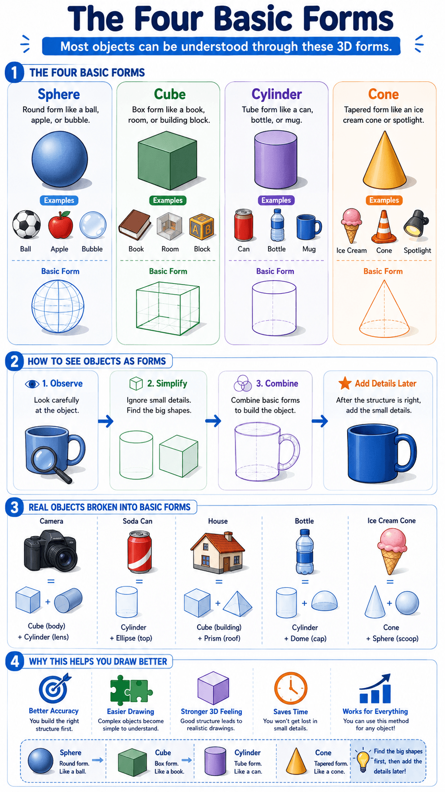
العربية: الكرة
أول حاجة عندنا هي ال اوSphere او الكورة.
وده أي جسم دائري بالكامل.
السلايد مدينا أمثلة:
Ball
Apple
Bubble
يعني الكورة، والتفاحة، وبلالين الصابون.
لما تتعلم ترسم Sphere صح، هتعرف ترسم حاجات كتير شبهها.
العربية: المكعب
الصندوق التاني هو Cube.
وده الشكل اللي ليه ستة أوجه مربعة.
زي:
كتاب
غرفة
مكعبات اللعب
كتير من الأثاث اللي في البيت او العفش يعني أو المباني ممكن نبسطها لمكعبات.
العربية: الأسطوانة
بعد كده عندنا Cylinder او الأسطوانة.
وده شكل أنبوبي.
زي:
Can
Bottle ازازة
Mug
لاحظوا إن الكوباية والازازة مختلفين في الشكل النهائي، لكن الأساس واحد.
العربية: المخروط
آخر شكل هو Cone.
قاعدته دائرية.
وبيطلع لفوق لحد نقطة.
زي:
Ice Cream Cone
Spotlight او الاضاءة اللي جايه من لمبة شبه لمبة المكتب
وده بنستخدمه في حاجات كتير في الرسم.
بص حواليك دلوقتي.
الكوباية = Cylinder.
الكتاب = Cube.
كرة القدم = Sphere.
قمع الآيس كريم = Cone.
هتلاقي إن معظم الأشياء حوالينا فعلاً ممكن تتحلل للأربع أشكال دول.
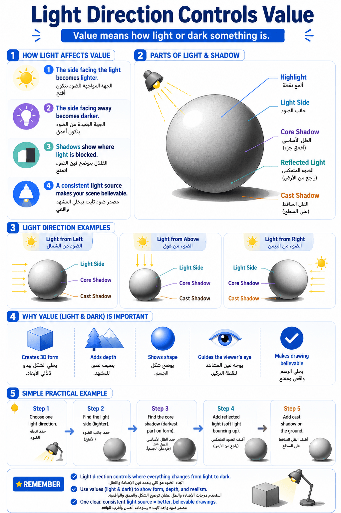
العربية: اتجاه الإضاءة
أول حاجة مكتوبة في السلايد هي:
Value means how light or dark something is.
فاكرين لما اتكلمنا عن Value؟
قولنا إنه بيعبر عن درجة الإضاءة أو الغمقان.
يعني مش بيتكلم عن اللون نفسه، لكن بيتكلم عن مدى فاتح أو غامق اللون.
لو عندك كرة لونها أزرق، ممكن يبقى عندك أزرق فاتح وأزرق غامق.
اللون هو نفسه، لكن الـ Value اتغير.
وده اللي هيخلينا نحس إن الجسم ليه حجم.
العربية: الجهة المواجهة للضوء بتكون أفتح
بصوا على أول قاعدة.
الجهة اللي الضوء بيضربها مباشرة هي اللي بتكون أفتح جزء في الجسم.
تخيل إنك ماسك كشاف ووجهته على كوباية.
أكيد الناحية اللي الكشاف بيضربها هتبقى منورة.
وده طبيعي جدًا.
وعلشان كده وإنت بترسم لازم تحدد مكان الضوء الأول.
بعدها تبدأ تفتح الجزء اللي الضوء واصل له.
العربية: الجهة البعيدة عن الضوء بتكون أغمق
القاعدة التانية بتقول:
الناحية اللي بعيدة عن الضوء هتبقى أغمق.
ليه؟
لأن الضوء مش بيوصلها بنفس القوة.
وده اللي بيخلي المجسم يبان ثلاثي الأبعاد.
لو لونت الجسم كله بنفس الدرجة، هيبان مسطح.
لكن لما تعمل انتقال تدريجي من الفاتح للغامق، المخ يبدأ يحس إن الجسم ليه حجم.
ودي من أهم الحاجات في الرسم الواقعي.
العربية: الظلال بتوضح فين الضوء موصلش او معرفض يوصل علشان فيه حاجة قصاده منعته
النقطة التالتة مهمة جدًا.
الظل مش بيتحط عشوائي.
الظل بيتكون لأن الجسم منع الضوء من إنه يوصل لجزء معين.
يعني لو عندك مصباح وكورة على المكتب.
الكورة هتمنع الضوء من إنه يوصل للمكتب.
فهيظهر ظل وراها.
فبالتالي الظل دليل على اتجاه الضوء.
العربية: مصدر ضوء ثابت
آخر نقطة بتقول ان لازم مصدر الضوء يفضل ثابت.
مينفعش في نفس الرسمة الكورة الضوء عليها من اليمين، والمكعب الضوء عليه من الشمال.
ده هيخلي الرسمة شكلها غلط.
علشان كده الرسامين المحترفين أول حاجة بيحددوها هي مكان الإضاءة، وبعدها كل العناصر تلتزم بنفس الاتجاه.
تخيل إنك حطيت تفاحة وموبايل وكوباية على ترابيزة، وشغلت لمبة من ناحية الشمال.
هتلاحظ إن الثلاثة عندهم الجزء الشمال فاتح، والجزء اليمين غامق، وكل الظلال رايحة ناحية اليمين.
لو غيرت الاتجاه في جسم واحد بس، أي حد هيلاحظ إن الرسمة مش طبيعية.
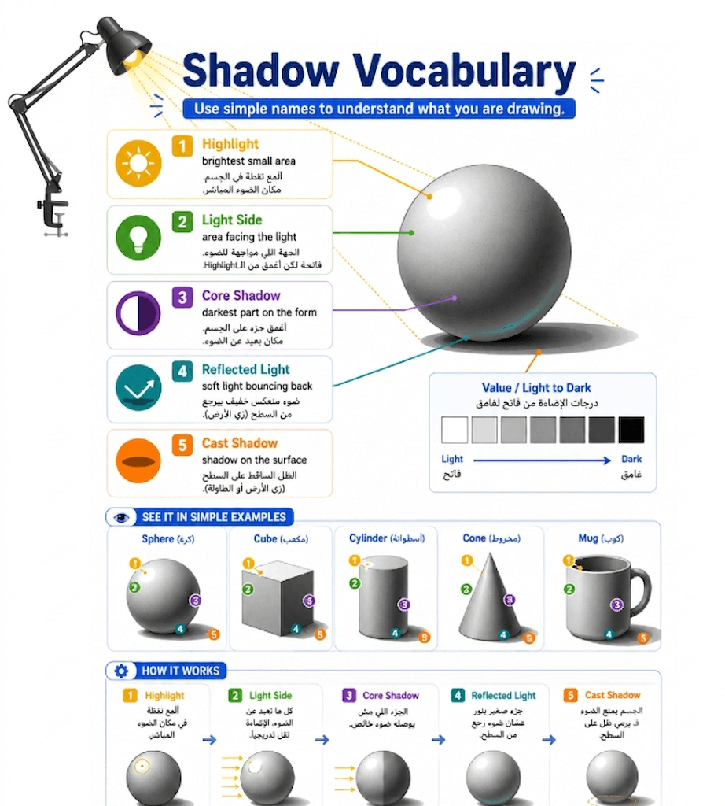
قبل ما نبدأ نرسم الظلال، لازم نتفق على أسماء الأجزاء المختلفة. لأن أثناء الشرح أو أثناء التصحيح، هنستخدم المصطلحات دي باستمرار، فمهم جدًا تعرف كل مصطلح بيشير لإيه.
العربية: ألمع نقطة
دي أصغر وأفتح منطقة في المجسم.
وهي المكان اللي الضوء بيضربه مباشرة.
مش لازم تكون كبيرة.
غالبًا بتكون نقطة أو مساحة صغيرة.
العربية: جانب الضوء
ده الجزء اللي مواجه لمصدر الضوء.
هيكون فاتح.
لكن مش بنفس قوة الـ Highlight.
كل ما نبعد عن الضوء، الإضاءة تقل تدريجيًا.
العربية: الظل الأساسي
ده أغمق جزء موجود على سطح المجسم نفسه.
خدوا بالكوا.
ده غير الظل اللي على الأرض.
الـ Core Shadow موجود على الجسم.
وبيوضح إن السطح بقى بعيد عن مصدر الضوء.
العربية: الضوء المنعكس
أحيانًا الضوء يرتد من الأرض أو الحائط ويرجع ينور جزء صغير من ناحية الظل.
وده اسمه Reflected Light.
بيكون خفيف جدًا.
لكن وجوده يخلي المجسم يبدو طبيعي.
العربية: الظل الساقط
وده الظل اللي الجسم بيرميه على الأرض أو على أي سطح حواليه.
مكانه وشكله بيعتمدوا على اتجاه الضوء.
ولو رسمناه غلط، الرسمة كلها هتحس إنها غير واقعية.
تخيل إنك حطيت كورة على مكتب، وولعت كشاف من ناحية الشمال.
هتلاقي:
Highlight في المكان اللي النور لمسه مباشرة.
Light Side في الجهة المواجهة للنور.
Core Shadow في الناحية البعيدة عن الضوء.
Reflected Light شريط فاتح بسيط راجع من سطح المكتب.
Cast Shadow مرسوم على سطح المكتب ناحية اليمين.
لما ترسم الخمس أجزاء بالشكل ده، الكورة هتبان كأنها حقيقية وليها حجم، مش مجرد دايرة مرسومة على الورقة.
بعد ما اتعلمنا أجزاء الظل، دلوقتي هنطبقها على أشهر أربع مجسمات أساسية. أي رسام تقريبًا بيتدرب على الأشكال دي الأول، لأنها بتعلمه يفهم الضوء والظل قبل ما يرسم أشكال معقدة.
العربية: ارسم أربع مجسمات
السلايد بيطلب منكم ترسموا:
Sphere
Cube
Cylinder
Cone
ليه الأربع دول؟
لأن معظم الأشياء اللي حوالينا ممكن نبسطها للمجسمات دي.
الكوباية شبه Cylinder.
الكورة Sphere.
العلبة Cube.
وقمع الآيس كريم Cone.
اختاروا اتجاه واحد للإضاءة.
وده مهم جدًا.
ما تغيروش اتجاه الضوء بين شكل والتاني.
كل المجسمات لازم تتأثر بنفس مصدر النور.
السلايد بيقول:
ضيفوا:
Highlight
Core Shadow
Reflected Light
Cast Shadow
يعني طبقوا كل أجزاء التظليل اللي اتعلمناها.
مش مجرد ظل وخلاص.
آخر نقطة بتقول:
استخدموا درجات الرمادي فقط.
ليه؟
علشان نركز على الضوء والظل.
مش على اختيار الألوان.
بعد ما خلصنا الرسم، قبل ما نقول إن الشغل انتهى، لازم نراجع نفسنا. السلايد ده عامل زي قائمة مراجعة أو Checklist نتأكد منها قبل ما نسلم الرسمة أو نعرضها على باقي الفصل.
العربية: مصدر الإضاءة
أول مربع بيقول:
One clear direction.
يعني لازم يكون عندك مصدر ضوء واحد واضح.
ماينفعش النور ييجي مرة من اليمين ومرة من الشمال.
لأن الظلال ساعتها هتبقى غلط.
قبل ما تبدأ التظليل، اسأل نفسك:
النور جاي منين؟
وبعدها امشي على نفس الاتجاه في كل العناصر.
العربية: درجات الإضاءة
المربع التاني بيقول:
At least 4 levels.
يعني لازم تستخدم أربع درجات على الأقل.
White
Light Gray
Dark Gray
Black
لو استخدمت درجتين بس، الشكل هيبان مسطح.
لكن كل ما تزود درجات الإضاءة، المجسم هيبان أكثر واقعية.
العربية: الظل الساقط
المربع التالت بيتكلم عن Cast Shadow.
وده الظل اللي الجسم بيرميه على الأرض.
لازم يلمس الأرض.
وكمان يكون ماشي في الاتجاه العكسي لمصدر الضوء.
لو مصدر الضوء من اليسار.
يبقى الظل ناحية اليمين.
العربية: إحساس المجسم
آخر نقطة بتقول:
The shape looks 3D, not flat.
يعني لما حد يبص على الرسمة.
يحس إن الشكل ليه حجم.
مش مجرد شكل مرسوم على ورقة.
وده الهدف الأساسي من التظليل.
بصوا يا جماعة، قبل ما نبدأ نرسم أي شارع أو أوضة أو ممر، لازم نفهم إن المنظور Perspective مش بيتعمل عشوائي. فيه 3 مصطلحات أساسية لو فهمناهم، هنعرف ليه الرسومات الاحترافية بتبان ثلاثية الأبعاد رغم إنها مرسومة على ورقة مسطحة. السلايد ده بيشرح التلات مصطلحات دول، وبعدها بيورينا مثال عملي عليهم في صورة أوضة.
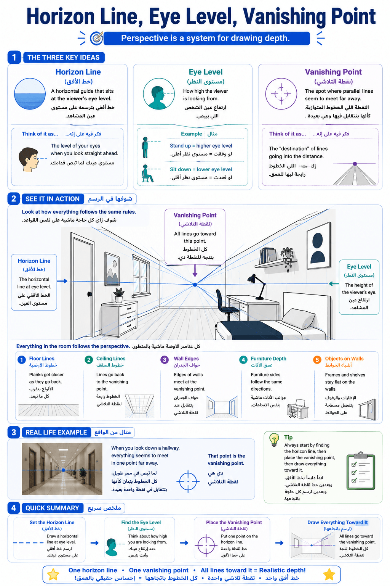
العربية: خط الأفق
اول حاجة عندنا Horizon Line هو خط أفقي بنرسمه علشان يمثل مستوى عين الشخص اللي بيبص على المشهد.
تخيل إنك واقف في الشارع وباصص لقدام بالظبط ومش مايل لتحت او لفوق.
ارتفاع عينك هو اللي بيحدد مكان الـ Horizon Line.
لو قعدت على الأرض، الخط هينزل.
ولو طلعت فوق سطح عمارة، الخط هيطلع لفوق.
يبقى الـ Horizon Line مش ثابت، لكنه بيتغير حسب مكان المشاهد.
وده مهم جدًا لأن كل المنظور هيعتمد عليه.
العربية: مستوى النظر
تاني حاجة عندنا Eye Level.
وده معناه ببساطة:
ارتفاع عين الشخص اللي بيتفرج.
ناس كتير بتتلخبط بين Eye Level و Horizon Line.
لكن الحقيقة إنهم مرتبطين جدًا.
الـ Eye Level هو ارتفاع عينك.
والـ Horizon Line هو الخط نفسه المرسوم اللي بيمثل الارتفاع ده في الرسمة.
يعني لو طفل صغير واقف يبص على أوضة، هيشوفها بشكل مختلف عن شخص طويل.
وده لأن مستوى النظر مختلف.
علشان كده الرسام لازم يحدد هو بيرسم المشهد من أنهي ارتفاع.
العربية: نقطة التلاشي
الصندوق الأخير بيتكلم عن Vanishing Point.
هي النقطة اللي الخطوط المتوازية كأنها بتتقابل عندها وهي بعيدة جدًا.
طبعًا في الحقيقة الخطوط المتوازية عمرها ما بتتقاطع.
لكن عين الإنسان بتحس بكده بسبب المنظور.
زي لما تبص على قضبان القطر.
أو طريق طويل.
هتحس إنهم بيتجمعوا في نقطة بعيدة.
وده بالضبط اللي الرسام بيقلده.
فانت هترسم خطوط من اول الصفحة لاخرها وكلها لازم تتقاطع في نقطة علشان نعرف نرسم وده هنوضحه اكتر ليه بنعمل كده قدام
لو وقفت في ممر المدرسة وبصيت لقدام، هتلاحظ إن البلاط والحيطان والسقف كأنهم بيتجمعوا في نقطة بعيدة جدًا.
لما تيجي ترسم المنظر ده، أول حاجة تعملها هي تحديد Horizon Line، وبعدها تحط Vanishing Point، وبعد كده تخلي كل الخطوط الأساسية تتجه ليها.
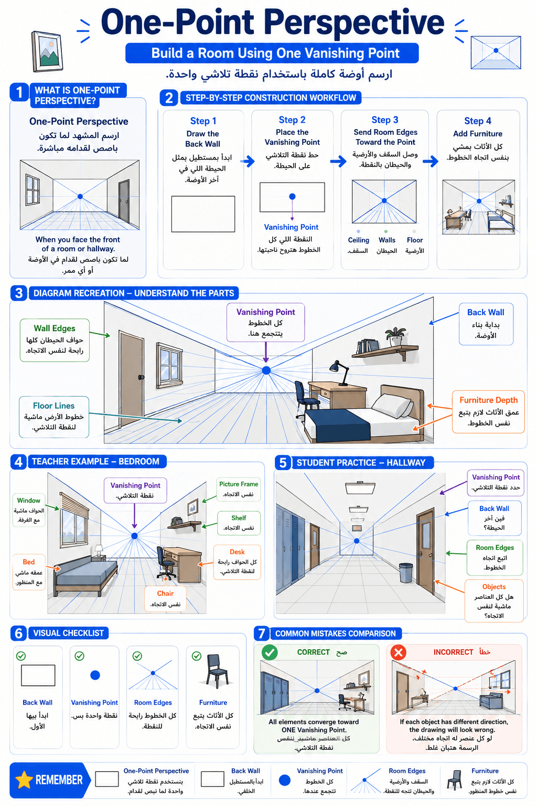
السلايد بيقول إننا بنستخدم نقطة تلاشي واحدة لما نكون باصين مباشرة على واجهة أوضة أو ممر.
يعني الشخص واقف في النص وبيبص لقدام.
في الحالة دي كل الخطوط اللي رايحة للداخل هتتجمع في نقطة واحدة.
ابدأ بالحائط الخلفي.
لأنه المرجع الأساسي لكل الرسم.
حط نقطة التلاشي على Horizon Line.
دي النقطة اللي كل الخطوط هتتجمع عندها.
كل حواف الأوضة.
السقف.
الأرضية.
الجدران.
لازم تتجه للنقطة دي.
لما تيجي ترسم سرير أو مكتب أو دولاب.
لا ترسمه بأي اتجاه.
لازم جوانبه تمشي بنفس خطوط المنظور.
الصورة الموجودة على يمين السلايد مثال ممتاز.
بصوا على السرير.
قاعدته ماشية ناحية نقطة التلاشي.
المكتب نفس الكلام.
الشباك.
السقف.
الأرضية.
الرف.
حتى اللوحات على الحائط متثبتة بما يناسب المنظور.
كل الخطوط الزرقاء اللي مرسومة هي خطوط إرشادية بتوضح إن كل العناصر بتلتزم بنفس Vanishing Point، وده اللي خلا الأوضة تبدو ثلاثية الأبعاد رغم إنها مرسومة على سطح مسطح.
لو وقفت في آخر طرقة المدرسة وبصيت لقدام، هتلاحظ إن الجدران والسقف والبلاط كأنهم بيتقفلوا على بعض في نقطة بعيدة جدًا. لما تيجي ترسم نفس المنظر، كل اللي هتعمله إنك تحط Vanishing Point، وبعدها تخلي كل الخطوط الأساسية تتجه ليها، وساعتها هتحصل على رسم واقعي فيه إحساس بالعمق.
احنا دلوقتي عاوزين نحس ان الصورة فيها عمق وانها مش مجرد رسمة 2D انما رسمة بتصور حاجة 3D ومش كل إحساس بالعمق بيجي من Perspective بس لكن احنا عندنا 3 طرق علشان نعمل كده
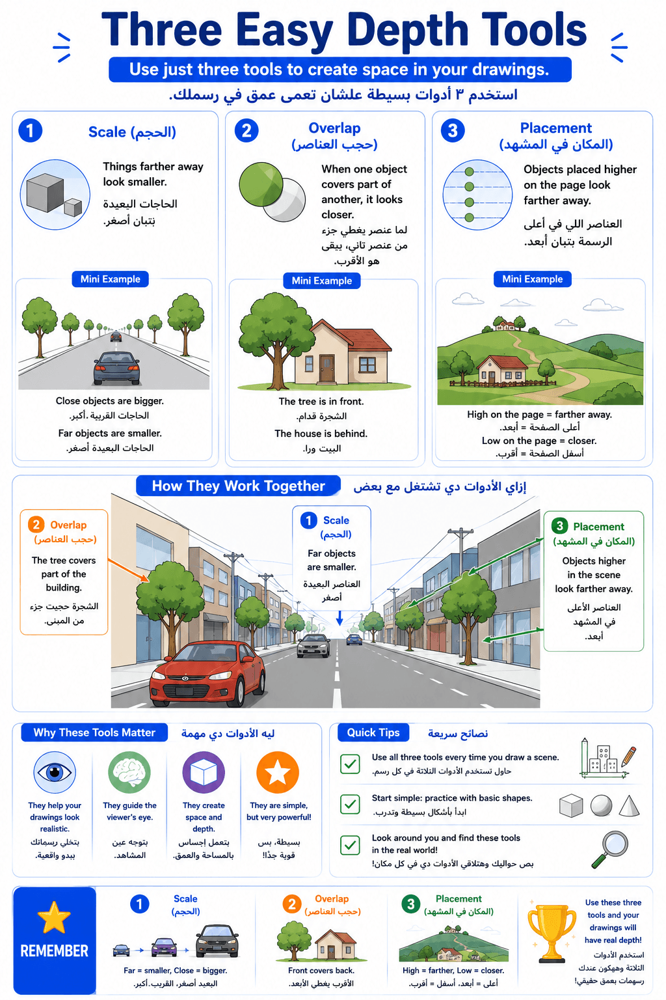
العربية: الحجم
أول حاجة عندنا الحجم واحنا عارفين طبعا انه كل ما الجسم يبعد.
شكله يصغر.
مش لأنه فعلاً صغر.
لكن لأنه بعيد عن عيننا.
وده أول دليل المخ بيستخدمه علشان يعرف المسافات.
العربية: التداخل
تاني حاجة لو جسم غطى جزء من جسم تاني.
يبقى الجسم الأول أقرب.
ودي من أسهل طرق رسم العمق.
العربية: مكان العنصر
تالت حاجة العناصر او الحاجات اللي قريبة من أسفل الصورة يعني اقرب للجزء السفلي من الصورة غالبًا نحس إنها أقرب.
واللي أعلى شوية نحس إنها أبعد.
وده بنشوفه في رسومات المناظر الطبيعية.
تخيل إنك بترسم شارع.
العربية البعيدة هترسمها أصغر.
وشجرة قدام العربية تغطي جزء منها.
وكمان العربية القريبة هتكون أسفل الورقة.
هتلاقي الرسمة بقت ليها عمق حتى من غير تفاصيل كتير.
بصوا يا جماعة، بعد ما فهمنا يعني إيه One-Point Perspective وإزاي الخطوط كلها بتتجمع في نقطة واحدة، دلوقتي جه وقت التطبيق العملي. السلايد ده مش مجرد تعليمات رسم، لكنه تدريب هيخليكم تستخدموا كل اللي اتعلمناه بإيديكم. الهدف هنا مش إن الرسمة تطلع تحفة فنية، الهدف إنكم تتدربوا على فكرة المنظور نفسها.
العربية: تدريب عملي صغير
السلايد كاتب إن النشاط مدته حوالي 12 دقيقة، وممكن يتعمل على ورقة أو باستخدام أي برنامج رسم.
لاحظوا إن النشاط قصير، وده معناه إن المطلوب مش تفاصيل كتير، لكن تطبيق صحيح.
العربية: ارسم الحائط الخلفي الأول
أول خطوة بتقول:ان أول حاجة هنرسم مستطيل.
المستطيل ده مش أي مستطيل.
ده بيمثل آخر حائط في الأوضة.
ناس كتير لما تيجي ترسم أوضة تبدأ بالأرضية أو السقف.
لكن هنا بنبدأ بالحائط الخلفي لأنه هيكون المرجع لكل الرسمة.
بمعنى إن باقي العناصر كلها هتتبني بالنسبة ليه.
العربية: أضف نقطة التلاشي
يعني نحط Vanishing Point (نقطة التلاشي) في منتصف الحائط تقريبًا.
ودي أهم نقطة في الرسمة كلها.
كل الخطوط اللي هترسمها بعد كده هتتجه للنقطة دي.
لو مكانها اتغير، اتجاه الأوضة كلها هيتغير.
العربية: وصل أركان الغرفة بنقطة التلاشي
يعني نوصل كل ركن من أركان الحائط بالنقطة اللي رسمناها.
الخطوط دي هتحدد:
السقف.
الأرضية.
الجدران.
لاحظوا إن الخطوط دي مجرد خطوط مساعدة.
ممكن بعد ما نخلص نمسحها.
آخر خطوة بتقول:
ضيف على الأقل 3 عناصر.
زي:
سرسر
مكتب
شبالك
رف
دولاب صغير او كمودينو
لكن خدوا بالكوا.
كل عنصر لازم يلتزم بنفس اتجاه الخطوط.
يعني لو هترسم مكتب.
السطح بتاع المكتب لازم يتجه ناحية الـ Vanishing Point.
ولو هترسم السرير.
الجوانب بتاعته تمشي بنفس الاتجاه.
وده اللي هيخلي الرسمة تبدو واقعية.
مراجعة سريعة عاوز اعرف انا ازاي كنت بعرف ان فيه عمق في الصورة
أول حاجة عندي لما تبص على رسمة، اسأل نفسك:
هل الخطوط بتوجه عينك ناحية نقطة معينة؟
زي خطوط الطريق أو السكة الحديد.
الخطوط دي بتخلي عينك تتحرك داخل الرسمة.
تاني حاجة هل الحاجات البعيدة أصغر؟
في الحقيقة، الحاجة البعيدة شكلها بيبان أصغر من القريبة.
والرسام بيستخدم الحيلة دي علشان يحسسنا بالمسافة.
آخر سؤال هل جسم واقف قدام جسم تاني؟
لما جزء من جسم يغطي جسم تاني، المخ يفهم إن الأول أقرب.
ودي واحدة من أبسط طرق إظهار العمق في الرسم.
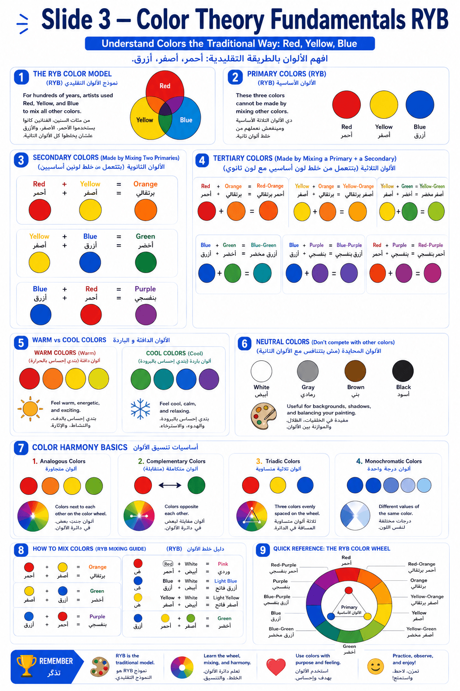
السلايد بيقول إن Color Wheel بتساعد الفنان ينظم الألوان.
ودي عبارة عن دائرة مرتبة فيها كل الألوان.
ومن خلالها بنعرف مين قريب من مين.
ومين مقابل لمين.
وبنستخدمها في اختيار الألوان المناسبة.
Primary Colors
RYB Color Palette
الألوان الأساسية هي:
أحمر.
أزرق.
أصفر.
ودي ألوان أساسية لأننا مش بنقدر نكونها من خلط ألوان
تانية.
وهنا لو واخدين بالكم في ال digital art
ماشيين بنظام ألوان RYB
مش RGB واللي على حسب ما قريت ده الاصل في الالوان
اللي بيستخدمها
الرسامين في الواقع وهما بيخلطوا الالوان التلاتة دول علشان يطلعوا كل
الالوان التانية
الألوان الثانوية بتتكون من خلط لونين أساسيين.
مثلاً:
أصفر + أزرق = أخضر.
أحمر + أصفر = برتقالي.
أزرق + أحمر = بنفسجي.
الألوان الثلاثية بتكون بين الأساسي والثانوي.
يعني لون ناتج من خلط لون أساسي مع لون ثانوي.
وده بيدينا درجات أكتر نستخدمها في التصميم.
لما تفتح أي برنامج رسم، هتلاقي آلاف الألوان.
لكن أغلبهم في الأصل جايين من مزج الألوان الأساسية مع بعض.
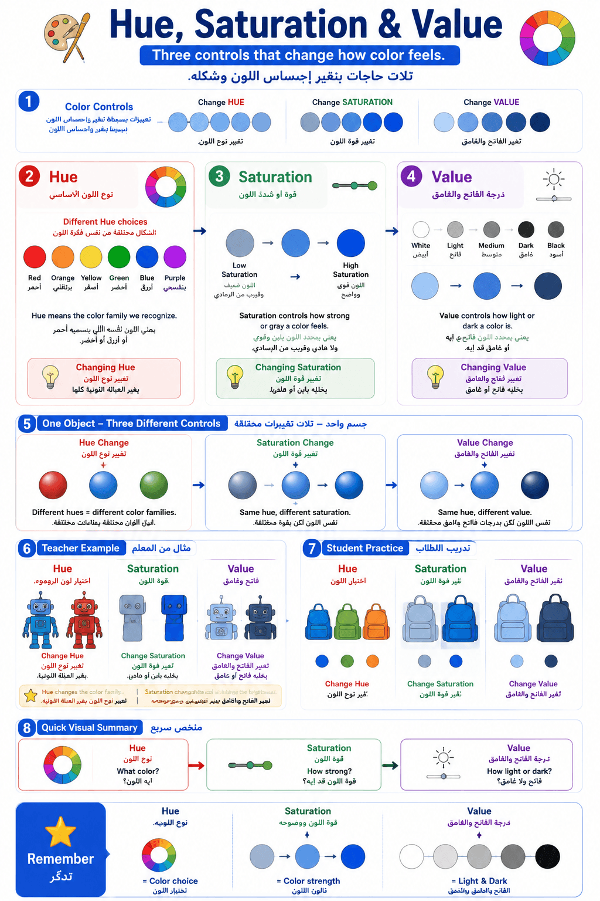
العربية: عائلة اللون
أول حاجة عندنا هي ال Hue وبينطق هيو.
يعني اللون الأساسي اللي في الصورة ااو الحاجة اللي رسمناها.
هل هو أحمر؟
أزرق؟
أصفر؟
أخضر؟
بنفسجي؟
لما نقول "غير الـ Hue"، يبقى إحنا بنغير اللون نفسه.
العربية: تشبع اللون
الصندوق اللي في النص هو Saturation.
وده معناه قوة اللون.
كل ما الـ Saturation يزيد.
اللون يبقى قوي وواضح.
ولو قللناه.
اللون يبقى باهت أو قريب من الرمادي.
وده بيستخدم علشان نغير إحساس التصميم.
هنجرب دلوقتي نفتح color picker علشان نزود مدى تشبع الالوان
ونقدر نغيره من 0 ل 100
%
العربية: درجة الإضاءة أو الغمقان
آخر صندوق هو Value.
وده بيحدد اللون فاتح ولا غامق.
مثلاً.
أزرق فاتح.
أزرق غامق.
الاتنين نفس الـ Hue.
لكن الـ Value مختلف.
وده بيساعدنا نعمل عمق وإضاءة داخل التصميم.
تخيل إن عندك تيشيرت أحمر.
لو غيرنا Hue هيبقى أزرق.
لو غيرنا Saturation هيبقى الأحمر باهت.
ولو غيرنا Value هيبقى الأحمر فاتح أو غامق.
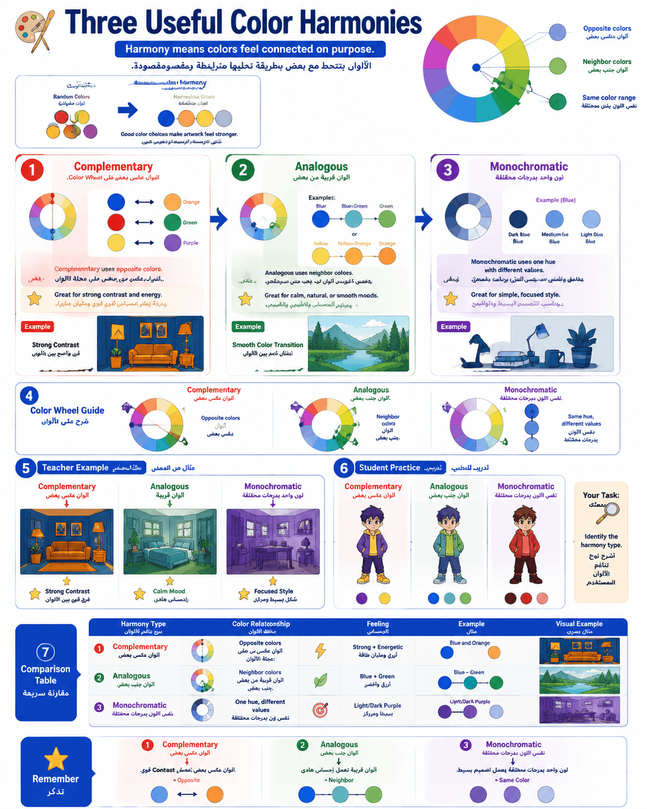
العربية: تناغم الألوان
ببساطة، كلمة Harmony معناها إن الألوان اللي في التصميم باينة كأنها متختارة بقصد، مش عشوائية.
يعني لما حد يبص على التصميم يحس إن كل لون ليه مكانه، وكلهم مكملين بعض.
أما لو استخدمنا ألوان كتير من غير تفكير، التصميم هيبقى مشتت ومش مريح للعين.
وده سبب إن أي مصمم محترف قبل ما يبدأ شغل، بيفكر الأول في مجموعة الألوان اللي هيستخدمها.
العربية: الألوان المتقابلة
اول حاجة ال Complementary.
الألوان دي بتكون مقابلة لبعض في Color Wheel.
زي:
الأزرق مع البرتقالي.
الأحمر مع الأخضر.
الأصفر مع البنفسجي.
لما نحط اللونين دول جنب بعض، كل واحد فيهم يخلي التاني يبان أكتر.
علشان كده بنستخدم النوع ده لما نكون عايزين نجذب الانتباه بسرعة.
مثلاً:
زرار Play في لعبة.
أو إعلان فيه خصومات.
أو تصميم رياضي مليان حركة.
لكن لازم نخلي بالنا.
لو استخدمنا الألوان المتقابلة بكثرة، التصميم ممكن يبقى متعب للعين.
فالأفضل نستخدمها في العناصر المهمة فقط.
العربية: الألوان المتجاورة
تاني حاجة ال Analogous.
الألوان هنا بتكون جنب بعض على عجلة الألوان.
زي:
أزرق.
أزرق سماوي.
أخضر.
الألوان دي قريبة من بعض جدًا.
علشان كده لما نحطهم مع بعض، التصميم يطلع هادي ومريح.
وده النوع اللي بنشوفه كتير في:
مناظر الطبيعة.
تطبيقات التأمل.
مواقع السفر.
تصميمات البحر أو السماء.
الميزة هنا إن مفيش لون بيزعق أكتر من التاني.
كلهم بيكملوا بعض.
العربية: لون واحد بدرجات مختلفة
واخر حاجة عندنا Monochromatic.
احنا هنا بنستخدم لون واحد فقط.
لكن نغير درجة الإضاءة أو الغمقان.
مثلاً:
أزرق فاتح.
أزرق متوسط.
أزرق غامق.
كلهم نفس اللون.
لكن بدرجات مختلفة.
وده بيخلي التصميم بسيط جدًا.
وأنيق.
ومركز.
علشان كده بنشوفه في تطبيقات كتير حديثة.
تخيل إنك هتصمم Poster للعبة رعب.
ممكن تستخدم Monochromatic بدرجات الأسود والبنفسجي.
لكن لو هتصمم إعلان لماتش كرة، غالبًا هتستخدم Complementary علشان يجذب الانتباه.
أما لو هتصمم إعلان لمنتجع سياحي، فالألوان Analogous هتدي إحساس بالراحة والهدوء.
لازم نعرف إن كثرة الألوان مش معناها إن التصميم هيبقى أحسن. بالعكس، أوقات قليلة الألوان بتخلي التصميم أقوى وأسهل للفهم.
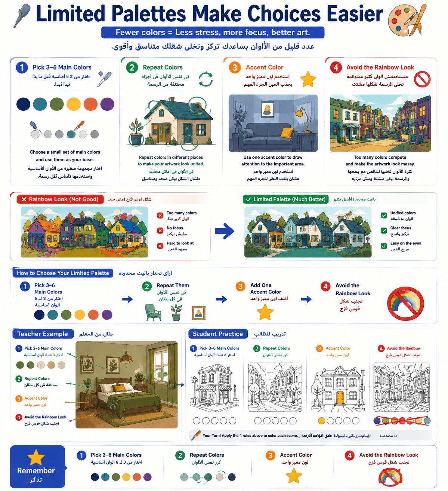
أول نقطة بتقول:
اختار من 3 إلى 6 ألوان أساسية قبل ما تبدأ الرسم.
ودي نصيحة مهمة جدًا.
لأن لو كل شوية غيرت لون.
التصميم هيبقى عشوائي.
لكن لما تحدد Palette من البداية.
كل حاجة هتبقى منظمة.
تاني نقطة.
كرر نفس الألوان في أماكن مختلفة.
ليه؟
علشان التصميم يحسسك إنه قطعة واحدة.
مش أجزاء منفصلة.
وده بيدي إحساس بالوحدة والانسجام.
بعد كده السلايد بيقول:
استخدم Accent Color واحد.
الـ Accent Color هو "لون الفرقعة"؛ لون جريء ومختلف بنستخدمه بكمية صغيرة جداً عشان يخطف العين ويوجهها للحاجة المهمة.
أوضح مثال: زرار الـ "Subscribe" في يوتيوب؛ الموقع كله أبيض وأسود هادي، وفجأة تلاقي الزرار بلون أحمر فاقع عشان عينك تروح عليه علطول وتدوس.
آخر نقطة.
بيقول إن استخدام Palette محدودة بيمنع التصميم يبقى شكله عامل زي قوس قزح.
لأن لما كل عنصر يبقى بلون مختلف.
المشاهد مش هيعرف يركز.
لكن لما الألوان تكون قليلة ومنظمة.
العين ترتاح.
والتصميم يبان احترافي.
تخيل إنك بتصمم Poster لفريق المدرسة.
لو استخدمت 15 لون مختلف، هيبقى التصميم مشتت.
لكن لو استخدمت الأزرق، والأبيض، والأسود، ومعاهم أصفر كـ Accent Color للعناوين المهمة، التصميم هيطلع أنضف، وأسهل في القراءة، وهيشد انتباه أي حد يشوفه من أول نظرة.
بعد ما اتعلمنا نختار مجموعة ألوان، لازم نفهم إن كل لون ممكن يدي إحساس مختلف للمشاهد. وده اللي بنسميه Color Psychology (علم نفس الألوان).
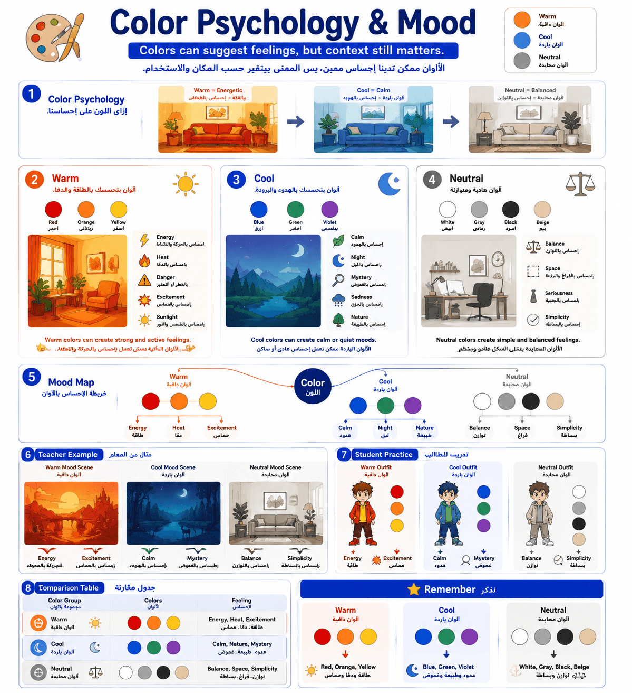
العربية: الألوان الدافئة
اول حاجة الالوان الدافية او ال Warm.
وتحته:
Red
Orange
Yellow
ودي كلها ألوان دافئة.
غالبًا بتدينا إحساس بـ:
الطاقة.
الحرارة.
الحماس.
الإثارة.
وأحيانًا الخطر.
علشان كده هنلاقي إشارات التحذير لونها أحمر.
العربية: الألوان الباردة
الالوان الباردة او ال Cool Colors.
زي:
Blue
Green
Violet
ودي غالبًا بتدي إحساس بالهدوء.
الطبيعة.
الليل.
الغموض.
وأحيانًا الحزن.
علشان كده تطبيقات التأمل أو النوم بتستخدم الأزرق كتير.
العربية: الألوان المحايدة
آخر نوع هو الالوان المحايدة
Neutral.
زي:
White
Gray
Black
Beige
ودي بتدي إحساس بالبساطة.
والاتزان.
والاحترافية.
علشان كده شركات كتير بتستخدم الأبيض والرمادي والأسود.
بعد ما عرفنا إن الألوان ليها تأثير على إحساس المشاهد، هنطبق الكلام ده في نشاط عملي. النشاط ده هيخلينا نفكر زي المصممين، مش مجرد نختار ألوان شكلها حلو.
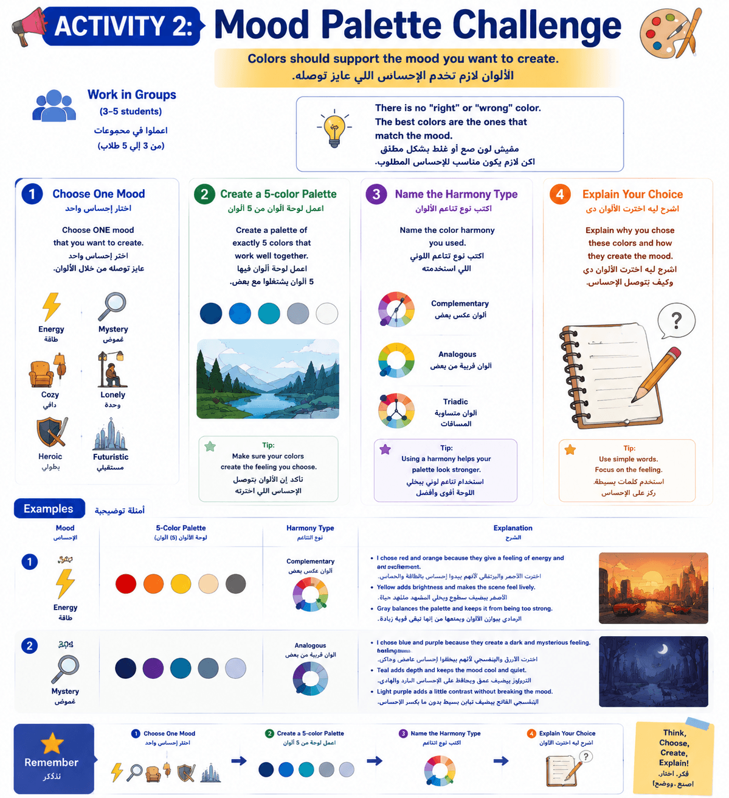
السلايد بيقول إن ال activity هيكون في مجموعات من 3 إلى 5 طلاب.
الفكرة هنا إن كل مجموعة هتشتغل مع بعض، وتناقش اختياراتها، لأن مفيش لون بيكون صح أو غلط بشكل مطلق، لكن لازم يكون مناسب للإحساس المطلوب.
أول خطوة إن كل مجموعة تختار إحساس واحد من الموجودين:
Calm
Energy
Mystery
Cozy
Lonely
Heroic
Futuristic
يعني مثلًا لو اخترت Calm، يبقى هتفكر في ألوان هادية.
ولو اخترت Energy، هتختار ألوان قوية ومليانة حركة.
ولو اخترت Mystery، ممكن تعتمد على ألوان غامقة.
الفكرة إن اللون لازم يخدم الإحساس.
بعد اختيار الإحساس.
المطلوب تعمل Palette فيها خمس ألوان.
مش أي خمس ألوان.
لكن خمس ألوان يشتغلوا مع بعض.
ويطلعوا نفس الإحساس.
بعد اختيار الألوان.
اكتب نوع الـ Harmony المستخدم.
هل هو:
Complementary
Analogous
Triadic
ولا أي نوع اتعلمناه.
وده هيأكد إن اختيار الألوان كان مبني على قاعدة.
مش عشوائي.
آخر خطوة.
اشرح ليه اخترت الألوان دي.
مثلاً:
اخترت الأزرق لأنه بيدي إحساس بالهدوء.
واستخدمت الأبيض علشان يزود الإحساس بالنقاء.
واستخدمت رمادي فاتح علشان التصميم يبقى بسيط.
مثلاً لو اخترنا Calm.
ممكن تكون Palette:
Light Blue
Sky Blue
White
Soft Gray
Mint Green
ودي كلها ألوان هادية بتدي إحساس بالراحة.
بصوا يا جماعة، بعد ما اتكلمنا في السلايدات اللي فاتت عن الألوان واختيارها، هنبدأ دلوقتي ندخل على جزء مهم جدًا في أي شغل Digital Design، وهو أساسيات الصور الرقمية. لأن أي مصمم مهما كان شاطر في الرسم أو اختيار الألوان، لو مش فاهم الصور الرقمية بتتخزن إزاي وبتشتغل إزاي، هيقابل مشاكل كتير بعد كده سواء في الطباعة أو النشر على الإنترنت أو حتى أثناء التعديل.
السلايد ده يعتبر مقدمة سريعة لكل المفاهيم اللي هنتكلم عنها بعد كده بالتفصيل.
العربية: الصور الرقمية
أول نقطة بتقول:
Digital images are stored in different ways.
يعني الصور الرقمية مش كلها بتتخزن بنفس الطريقة.
ممكن صورة تكون معمولة من Pixels.
وممكن تكون معمولة من Paths.
وده معناه إن مجرد إن الاتنين اسمهم "صورة" مش معناه إنهم نفس النوع.
ودي من أكتر الأخطاء اللي بيقع فيها أي مبتدئ.
كتير من الناس يفتكروا إن كل الصور زي بعض، لكن الحقيقة إن طريقة تكوين الصورة هي اللي بتحدد هتستخدمها في إيه.
العربية: البكسلات
النقطة التانية بتقول:
Some images are built from pixels.
يعني فيه صور معمولة من Pixels.
الـ Pixel هو أصغر جزء لون في الصورة.
لو الصورة فيها ملايين الـ Pixels، كل Pixel منهم ليه لون معين.
كلهم مع بعض بيكونوا الصورة الكاملة.
وده النوع اللي بنستخدمه في الصور الفوتوغرافية.
يعني الصورة اللي بتصورها بالموبايل.
أو صورة نزلتها من الإنترنت.
كلها تقريبًا Raster Images.
العربية: المسارات القابلة للتعديل
بعد كده السلايد بيقول:
Some images are built from editable paths.
وده المقصود بيه Vector Graphics.
يعني الصورة مش عبارة عن Pixels.
لكن عبارة عن خطوط ومنحنيات بيحسبها الكمبيوتر بمعادلات رياضية.
الميزة هنا إنك تقدر تكبر الصورة أو تصغرها براحتك.
ومن غير ما الجودة تتأثر.
وده السبب إن اللوجوهات والشعارات غالبًا بتكون Vector.
آخر نقطة في السلايد مهمة جدًا.
السلايد بيقول إن جودة الصورة واستخدامها بيتأثروا بأربع حاجات:
أول حاجة Resolution.
وده كمية التفاصيل الموجودة في الصورة.
تاني حاجة Size.
وده حجم الصورة.
سواء بالبكسل أو بالطباعة.
تالت حاجة Aspect Ratio.
وده نسبة الطول إلى العرض.
يعني مثلًا صورة مربعة.
وصورة مستطيلة.
وصورة عريضة.
كل واحدة ليها Aspect Ratio مختلف.
رابع حاجة File Format.
وده الامتداد اللي بنحفظ بيه الصورة.
زي JPG.
أو PNG.
أو SVG.
كل امتداد ليه استخدام مختلف.
تخيل إن اتنين عندهم نفس اللوجو.
واحد حفظه JPG.
والتاني حفظه SVG.
أول ما المدرسة طلبت تطبع اللوجو على Banner كبير.
الـ JPG بقت جودته ضعيفة.
لكن الـ SVG فضل واضح.
وده بسبب طريقة بناء الصورة.
بصوا يا جماعة، قبل ما نبدأ نشتغل على أي تصميم أو صورة، لازم نفهم إن مش كل الصور معمولين بنفس الطريقة. في الحقيقة فيه نوعين أساسيين من الصور الرقمية، وكل واحد ليه استخدامات مختلفة. لو فهمنا الفرق بينهم، هنعرف إمتى نستخدم كل نوع، وإزاي نتجنب مشاكل زي إن الصورة تبقى مشوشة أو الجودة تقل.
العربية: الصور النقطية
بصوا على الصندوق اللي على الشمال.
العنوان مكتوب Raster Graphics.
النوع ده معمول من Pixels (البكسلات)، يعني الصورة عبارة عن عدد ضخم جدًا من المربعات الصغيرة جدًا الملونة.
تخيلوا إنكم عاملين لوحة كبيرة من مكعبات LEGO.
كل مكعب صغير يعتبر Pixel.
لما نبعد عنها هنشوف صورة كاملة، لكن لو قربنا جدًا هنبدأ نشوف المربعات دي.
وده بالضبط اللي بيحصل في صور الـ Raster.
السلايد كاتب إن النوع ده ممتاز للـ:
Photos
Digital Painting
Textures
Detailed Illustrations
وده معناه إنه مناسب جدًا للصور اللي فيها تفاصيل كتير.
مثلاً:
صورة شخص.
صورة طبيعة.
صورة عربية.
أي صورة متصورة بالموبايل.
كل دي غالبًا Raster.
لكن فيه نقطة مهمة جدًا مكتوبة آخر السطر.
بيقول:
Can look blurry when enlarged too much.
يعني لو كبرنا الصورة زيادة عن حجمها الطبيعي، هتبدأ الجودة تقل.
ليه؟
لأن عدد الـ Pixels ثابت.
لما نكبر الصورة الكمبيوتر بيكبر نفس الـ Pixels.
فالمربعات الصغيرة تبان.
وساعتها الصورة تبقى مشوشة أو Pixelated.
العربية: الرسومات المتجهية
دلوقتي بصوا على الصندوق اللي على اليمين.
العنوان هنا Vector Graphics.
النوع ده مختلف خالص.
هو مش معمول من Pixels.
هو معمول من:
Paths
Shapes
يعني خطوط وأشكال ومعادلات رياضية.
علشان كده الكمبيوتر يقدر يرسمها بأي حجم من غير ما الجودة تقل.
السلايد بيقول إنه ممتاز لـ:
Logos
Icons
Flat Graphics
يعني لو هتصمم Logo لشركة.
أو Icon لتطبيق.
أو أيقونة داخل موقع.
يبقى Vector هو الاختيار الصح.
وأهم ميزة مكتوبة:
Scale Cleanly
يعني مهما كبرت التصميم هيفضل واضح.
سواء حجمه 5 سم.
أو 5 متر.
الجودة هتفضل ثابتة.
لاحظوا إن السلايد مقسوم لصندوقين متساويين.
الصندوق الشمال بيمثل Raster.
والصندوق اليمين بيمثل Vector.
الفكرة من التقسيم ده إنه يعمل مقارنة مباشرة.
كل صندوق فيه عنوان كبير بالأزرق.
وتحته وصف مختصر.
وده بيساعد الطالب يشوف الفرق بسرعة.
تخيل إن المدرسة طلبت منك تعمل Banner كبير جدًا.
لو استخدمت Logo عبارة عن صورة JPG، أول ما يكبر هتلاقيه بقى مشوش.
لكن لو نفس الـ Logo معمول SVG أو أي Vector Format، هيطلع واضح مهما كبرناه.
وده سبب إن أغلب الشعارات الاحترافية بتتعمل Vector.
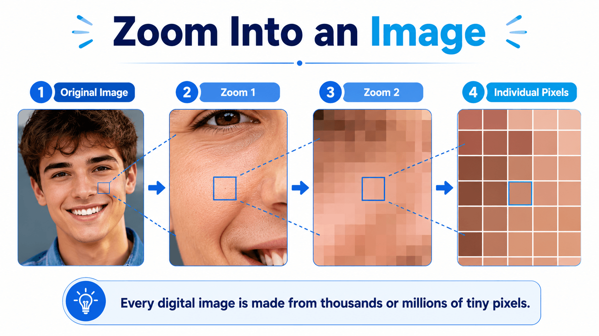
بعد ما عرفنا إن صور الـ Raster معمولة من Pixels، دلوقتي هنفهم يعني إيه Pixel، ويعني إيه Resolution، وليه اختيار حجم الصورة من البداية مهم جدًا.
العربية: البكسل
أول نقطة مكتوبة:
Pixel: one tiny square of color in a raster image.
يعني الـ Pixel هو أصغر مربع لون موجود داخل صورة Raster.
تخيل شاشة الكمبيوتر.
لو قربت منها جدًا هتلاقيها عبارة عن نقط صغيرة.
كل نقطة لون منها اسمها Pixel.
كل صورة ممكن تحتوي على ملايين الـ Pixels.
ولما كلهم يتحطوا جنب بعض يطلعوا الصورة اللي إحنا شايفينها.
العربية: دقة الصورة
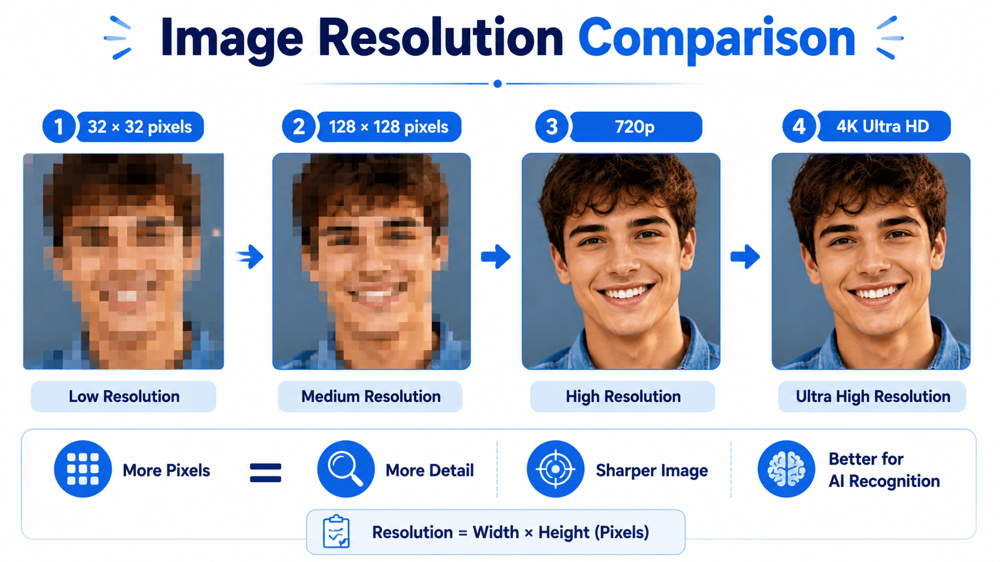
السطر اللي بعده بيتكلم عن Resolution.
وده معناه كمية التفاصيل الموجودة في الصورة.
كل ما عدد الـ Pixels يزيد.
التفاصيل تزيد.
يعني وش الإنسان يبان أوضح.
الشعر يبان أدق.
العين تبان أوضح.
لكن لازم نفهم إن Resolution مش معناه حجم الصورة فقط.
هو بيعبر عن مستوى التفاصيل.
السلايد بيقول:
كل ما الـ Pixels يزيدوا.
الصورة تبقى أوضح.
لكن في نفس الوقت حجم الملف هيزيد.
يعني فيه علاقة بين الجودة وحجم الملف.
لو عندك صورة صغيرة جدًا.
ممكن تبقى 300KB.
لكن صورة بنفس الشكل بدقة أعلى.
ممكن تبقى 8MB.
آخر نقطة مهمة جدًا.
بيقول:
Always choose a size before starting a final artwork.
يعني قبل ما تبدأ تصميمك النهائي.
حدد من الأول هتستخدمه فين.
هل هيتطبع؟
ولا هيتنشر على السوشيال ميديا؟
ولا هيتعرض على شاشة؟
لأن تغيير الحجم بعد الانتهاء ممكن يسبب مشاكل في الجودة.
لو هتصمم صورة لـ Instagram.
مش منطقي تعملها بحجم Poster كبير جدًا.
ولو هتصمم Banner للطباعة.
مينفعش تبدأ بصورة صغيرة.
لازم تحدد الاستخدام الأول.
بعد ما عرفنا أنواع الصور، دلوقتي هنشوف أشهر امتدادات الملفات، وإمتى نستخدم كل واحد فيهم.
الصندوق الأول مكتوب فيه JPG.
وده أشهر Format للصور.
مناسب للصور الفوتوغرافية.
وحجمه غالبًا صغير.
لكن مفيهوش Transparency.
يعني الخلفية لازم تكون موجودة.
الصندوق التاني PNG.
الميزة الأساسية هنا هي Transparency.
يعني ممكن تحفظ الصورة من غير خلفية.
وده مناسب جدًا للـ Icons أو اللوجوهات البسيطة.
وكمان الجودة بتكون أعلى من JPG في الرسومات.
الصندوق الثالث SVG.
وده Vector Format.
بيستخدم للـ Logos.
والـ Icons.
وممكن تكبره لأي حجم من غير فقدان الجودة.
الصندوق الرابع PSD.
وده الملف الأصلي لبرنامج Photoshop.
بيحفظ Layers كلها.
يعني تقدر ترجع تعدل بعدين.
وده اسمه Working File.
مش الملف اللي غالبًا بتبعته للعميل.
آخر صندوق MP4.
وده خاص بالفيديوهات أو Animation Export.
يعني لو عملت Motion Design أو Animation.
غالبًا هتطلع النسخة النهائية MP4.
في آخر السلايد مكتوب تذكير مهم.
بيقول إن:
Working File
غير
Sharing File.
يعني الملف اللي بتشتغل عليه غير الملف اللي بتسلمه.
مثلاً.
تشتغل PSD.
لكن تبعت PNG أو JPG.
السلايد عامل كل Format داخل Box مستقل.
وده بيسهل مقارنة الاستخدام الأساسي لكل امتداد بسرعة.
لو صممت Logo.
هتحتفظ بـ PSD أو AI للتعديل.
ولو هترفعه على موقع بخلفية شفافة.
هتستخدم PNG.
ولو عايز النسخة الأصلية اللي تكبرها براحتك.
هتستخدم SVG.
السلايد بيقول إن النشاط مدته حوالي 8 دقائق، والشغل هيكون في أزواج. كل مجموعة تناقش الأسئلة، وبعد كده تكتب اسم الـ File Format + سبب واحد لاختيارها.
Which format would you use for a transparent game icon?
الإجابة النموذجية:
PNG
ليه؟
لأنه بيدعم Transparency.
يعني الأيقونة تشتغل فوق أي خلفية.
Which format is best for a layered digital painting you want to edit later?
الإجابة:
PSD
لأنه بيحتفظ بالـ Layers.
فتقدر تعدل في أي وقت.
Which format fits a short animation export?
الإجابة:
MP4
لأنه أشهر Format لتصدير الفيديوهات والـ Animation.
Which format would you avoid for a logo that must scale very large?
الإجابة:
JPG
ليه؟
لأنه Raster.
ولو كبرناه الجودة هتقل.
والأفضل هنا يكون SVG.
على يمين السلايد فيه صورة صغيرة فيها وجه مبتسم Pixel Art.
الصورة دي معمولة بمربعات واضحة.
الفكرة منها تذكير الطلبة إن الصور النقطية بتعتمد على Pixels، وإن اختيار الامتداد المناسب بيأثر على الجودة وطريقة الاستخدام.
اقرأ السؤال كويس الأول.
فكر في استخدام الملف، مش اسمه.
اسأل نفسك: هل محتاج Transparency؟ ولا تعديل؟ ولا تكبير؟ ولا فيديو؟
اكتب الإجابة ومعاها سبب بسيط، لأن السبب أهم من حفظ الامتداد.
الحل النهائي:
Transparent game icon → PNG
Layered editable painting → PSD
Short animation export → MP4
Format to avoid for a large scalable logo → JPG (والبديل المناسب هو SVG).